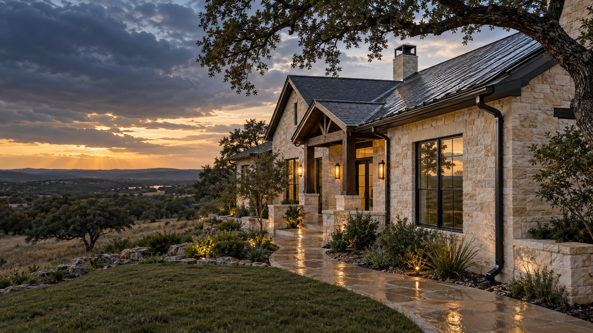

Seamless installation
Continuous 6-inch or 7-inch gutter runs formed at your property to reduce seams and create a cleaner finished look.

San Antonio • Hill Country • Abilene
Custom seamless gutter systems formed on-site for a clean fit, dependable drainage, and fewer leak points.
What we install
From the first measurement through the final downspout, Highland Lakes handles the details that keep water moving away from your home.
Continuous 6-inch or 7-inch gutter runs formed at your property to reduce seams and create a cleaner finished look.
Careful removal and haul-off of the old system, followed by a properly sized seamless replacement.
Downspouts positioned to carry roof runoff away from foundations, walkways, landscaping, and high-traffic areas.
Optional gutter guards help reduce routine cleaning while keeping water moving through the system.
Two sizes. One custom fit.
A versatile seamless system for most residential rooflines.
Higher capacity for large roofs and demanding water flow.
Start your project
Tell us about your property to see a starting price, choose a measurement visit, and preview the 50% deposit.
Simple from start to finish
Enter the property details and select the system that fits the home.
Choose an onsite visit so the roofline and job conditions can be verified.
Approve the final scope and place a 50% deposit to secure the job.
A long route. One local standard.
Highland Lakes travels the San Antonio-to-Abilene corridor, including communities throughout the Hill Country and surrounding areas.
Protect the property before the next storm.
Request saved
Your request is now in the owner dashboard. Continue to Stripe to place the 50% deposit.